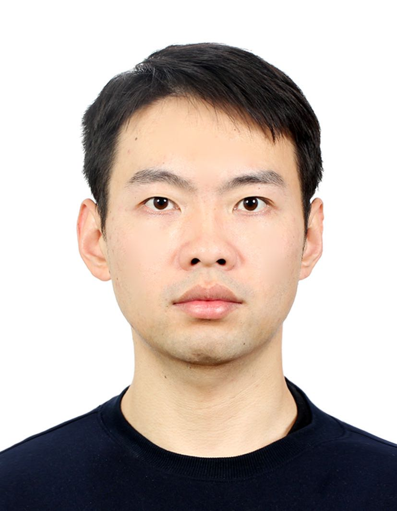

Jin Chen
Postdoctoral Researcher
Swarm Systems Lab, Department of Computer Engineering, Automation and Robotics
University of Granada, Spain
I am a postdoctoral researcher with the Swarm Systems Lab at the University of Granada, Spain, working with Dr. Héctor García de Marina. Previously, I was a postdoctoral researcher at the School of Mechanical Engineering, Shanghai Jiao Tong University, hosted by Prof. Yafei Wang, where I received the Shanghai Super Postdoc Award. I received my Ph.D. from the Discrete Technology & Production Automation (DTPA) group, University of Groningen, the Netherlands, in February 2025, supervised by Prof. Bayu Jayawardhana and Prof. Ming Cao.
My research spans two directions. In multi-robot systems, I develop scalable distributed formation control methods with limited sensing for robot teams operating with heterogeneous, range-only or otherwise limited information. In autonomous driving, I work on safe and data-driven control of autonomous vehicles, including trajectory tracking under limited data, safe reinforcement learning, and safety-guaranteed control of vehicle platoons. Across both, I emphasize rigorous stability and safety guarantees together with experimental validation. My work has appeared in control, automation and robotics journals, including IEEE Transactions on Automatic Control and IEEE Transactions on Industrial Informatics.
News
- PaperOur paper on epigraph-form reinforcement learning for safe trajectory tracking is available in IEEE Internet of Things Journal (early access).
- Paper"Direct data-driven trajectory tracking control for autonomous vehicles via algebraic regulator under limited data" is published in IEEE Transactions on Industrial Informatics.
- JobJoined the Swarm Systems Lab at the University of Granada as a Postdoctoral Researcher.
- ServiceInvited Session Chair at IEEE ICCA 2026, ICTEC 2026 and CVCI 2027.
- Paper"Dispersion formation control: From geometry to distribution" appeared online in IEEE Transactions on Automatic Control (2026 journal issue).
- JobJoined Shanghai Jiao Tong University as a Postdoctoral Researcher, with the Shanghai Super Postdoc Award.
- PhDReceived my Ph.D. degree from the University of Groningen.
- AwardOur university team won the RDW Self-Driving Challenge, which I supervised.
Research
Multi-Robot Formation Control
Distributed coordination of robot teams with limited sensing — heterogeneous distance/bearing measurements, range-only information, missing orientation measurements — and safety-critical formation control with control barrier functions, validated on ground robots and drones.
- Mixed distance and bearing-only formations (IEEE TAC 2024)
- Dispersion formation control: from geometry to distribution (IEEE TAC 2026)
- Range-only safety-critical formation control (IEEE IoT-J 2025)
- Formation-motion control of unicycles without orientation (IEEE TCNS 2025)
Autonomous Driving
Safe and data-driven control for autonomous vehicles: direct data-driven trajectory tracking under limited data, reinforcement learning with safety guarantees, safety-guaranteed MPC for connected vehicle platoons, and LiDAR-based perception.
- Direct data-driven trajectory tracking via algebraic regulator (IEEE TII 2026)
- Epigraph-form RL for safe connected-vehicle tracking (IEEE IoT-J 2026)
- Safe RL trajectory tracking via Lagrangian-PPO (Unmanned Systems 2026)
- MPC of vehicle platoons with high-order CBFs (RAITS 2026)
- Fast segmentation of 3-D point clouds (CVCI 2019)
Supervised the university team that won the 2023 RDW Self-Driving Challenge.
Bio & CV
Professional Experience
- 04/2026 – presentPostdoctoral Researcher, University of Granada, SpainSwarm Systems Lab, Department of Computer Engineering, Automation and Robotics · Host: Dr. Héctor García de Marina
- 03/2025 – 04/2026Postdoctoral Researcher, Shanghai Jiao Tong University, ChinaSchool of Mechanical Engineering · Host: Prof. Yafei Wang · Shanghai Super Postdoc Award
Education
- 01/2021 – 02/2025Ph.D., University of Groningen, the NetherlandsDiscrete Technology & Production Automation (DTPA) · Supervisors: Prof. Bayu Jayawardhana and Prof. Ming Cao
- 09/2017 – 07/2020M.S.E. in Vehicle Engineering, Shanghai Jiao Tong University, China
- 09/2011 – 07/2015B.E. in Mechanical Engineering and Automation, Jilin University, China
Publications
* Corresponding author; multiple stars indicate co-corresponding authors. J. Chen is highlighted. 10 journal articles and 5 conference papers. Full list on Google Scholar
15 publications
- M. Li, Z. Sun*, J. Chen, and S. WeilandControl Engineering Practice, vol. 178, 107310, 2027.
- X. Yang, J. Chen*, Y. Wang*, Q. Zhang, M. Li, H. Wu, C. Yin, and Y. ZhangIEEE Internet of Things Journal, early access, 2026.
- J. Chen, L. Li, Y. Wang*, Q. Zhang, H. Chen, J. Zhou, and M. WuIEEE Transactions on Industrial Informatics, vol. 22, no. 5, pp. 4456-4467, 2026.
- M. Li*, J. Chen, and D. V. DimarogonasIEEE Control Systems Letters, vol. 10, pp. 943-948, 2026.
- Z. Liu, Z. Sun*, J. Chen, and M. CaoIEEE Transactions on Control of Network Systems, vol. 13, no. 2, pp. 1170-1181, 2026.
- Q. Zhang, X. Yang, J. Chen*, Y. Wang*, G. Yang, and M. LiUnmanned Systems, 2026.
- J. Chen*, J. B. Villar, B. Jayawardhana, and H. G. de MarinaIEEE Transactions on Automatic Control, vol. 71, no. 3, pp. 2007-2014, 2026.
- J. Chen, M. Li, M. Marcantoni, B. Jayawardhana, and Y. Wang*IEEE Internet of Things Journal, vol. 12, no. 19, pp. 40968-40979, 2025.
- J. Chen*, B. Jayawardhana, and H. G. de MarinaIEEE Transactions on Control of Network Systems, vol. 12, no. 1, pp. 144-151, 2025.
- J. Chen*, B. Jayawardhana, and H. G. de MarinaIEEE Transactions on Automatic Control, vol. 69, no. 11, pp. 8011–8017, 2024.
- J. Chen, X. Yang, Y. Wang*, Qi Zhang, Qihang Zhang, and M. Qiu2026 International Conference on Robotics, Automation and Intelligent Transportation Systems (RAITS), pp. 1-6, 2026.
- J. Chen*, M. Marcantoni, and B. Jayawardhana2024 IEEE 63rd Conference on Decision and Control (CDC), pp. 70–75, 2024.
- Z. Liu, Z. Sun, J. Chen, and M. Cao*2024 IEEE 63rd Conference on Decision and Control (CDC), pp. 64–69, 2024.
- J. Chen*, B. Jayawardhana, and H. G. de Marina2023 American Control Conference (ACC), pp. 1036–1041, 2023.
- J. Chen, Y. Wang*, K. Dai, and T. Ma2019 3rd Conference on Vehicle Control and Intelligence (CVCI), pp. 1-6, 2019.DOIBest Young Author Runner-up Award
Honors & Awards
- 2025Shanghai Super Postdoc Award
- 2023Champion, RDW Self-Driving Challenge (as university-team supervisor)
- 2019Best Young Author Runner-up Award, Conference on Vehicle Control and Intelligence (CVCI)
Grants & Projects
- ResearcheriSwarm: Controlling imperfect robot swarms, ERC Starting Grant (No. 101076091), University of Granada, Spain, 2024–2028PI: Dr. Héctor García de Marina · A control theory that exploits sensor and actuator imperfections (dropouts, delays, scaling errors) to shape the emergent behaviour of robot swarms.
Supervision & Teaching
Co-supervised Students
- 2025 –Xiaoke Yang (Ph.D., SJTU) — Reinforcement learning-based safe trajectory tracking control for connected and autonomous vehicles
- 2025 –Qi Zhang (M.Sc., SJTU) — State-based reinforcement learning safe trajectory tracking for autonomous vehicles
Teaching
- 2024 SpringTutorial, "Signals and Systems" (Bachelor), University of Groningen
- 2023 SpringTutorial, "Signals and Systems" (Bachelor), University of Groningen
Academic Services
- 2027Invited Session Chair, Conference on Vehicle Control and Intelligence (CVCI 2027)
- 2026Invited Session Chair, International Conference on Traffic Engineering and Control (ICTEC 2026)
- 2026Invited Session Chair, 20th IEEE International Conference on Control and Automation (ICCA 2026)
Contact
Address
Swarm Systems Lab
Department of Computer Engineering, Automation and Robotics
University of Granada, Granada, Spain